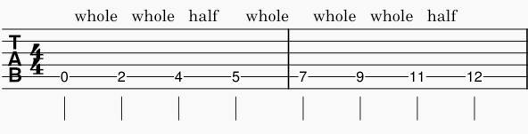
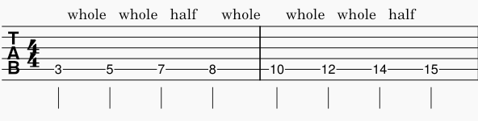

note: this article assumes you understand the basics of a major scale. to brush up, read this article.
Once you understand the basic concept, construction, and the uses of the major scale, we can apply it to the guitar on a single string.
We can learn the major scale by playing it with the root note on an open string. Start with the open A-string, then ascend the step pattern until you reach the octave at the 12th fret.

We can do the same for a fretted root note, such as C. Start with C on the A-string and complete the C-major scale.

To fully understand your major scale, you'll need to practice it in many ways, listening intently (active listening) while thinking of the scale degree (number of the note in the scale) you're currently playing.
Once you become comfortable with the goals and exercises above, feel free to move on to Intro to Basic Improv.